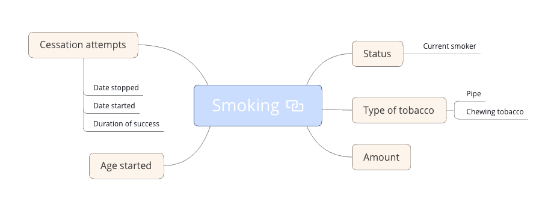

15th Dec 09:00 openEHR workshop Session 2
Agenda
East Accord: openEHR Training Session Two 15th December 2020
| Topic | Dtn. | Start | End |
|---|---|---|---|
| openEHR Archetype classes | 45 | 09:00 | 09:45 |
| Break | 10 | 09:45 | 09:55 |
| Mindmap modelling smoking breakout | 45 | 09:55 | 10:40 |
| Break | 10 | 10:40 | 10:50 |
| Modelling governance | 45 | 10:50 | 11:35 |
| Break | 5 | 11:35 | 11:40 |
| Questions/ issues | 20 | 11:40 | 12:00 |
| Technical - API / Archetyping Smoking | 50 | 12:00 | 12:50 |
| Questions/ issues | 10 | 12:50 | 13:00 |
Mindmapping Smoking - Getting started
-
Use any mind-mapping software of your choice - we tend it to use Xmind
-
As a group, take about 25 minutes to develop a maximal dataset for 'smoking status'
Use this image as a start point

- Rejoin the main channel and we will compare notes with the other group, and look at examples from the
Modelling Smoking - Getting started
-
Open a web browser – Chrome or Firefox are best
-
Go to https://tools.openehr.org/designer (Best if you open this link in a new tab).
-
Login:
freshehr_trainingPassword:ad4freshtraining -
Create a new EVALUATION archetype for 'smoking_status' and see how much of the mindmap you can correctly model.
Technical Intro
You may find this document helpful as a follow-up to the brief Technical Intro. We will cover the Technical aspects in more depth in the next training event.
https://freshehr.github.io/dhi-proms/
Download Postman artefacts

ehrscapeBaseUrl: https://cdr.code4health.org/rest/v1
openehrBaseUrl: https://cdr.code4health.org/rest/openehr/v1
https://cdr.code4health.org/studio
A. List templates and upload a new template
https://freshehr.github.io/dhi-proms/cdr/ehrscape/ECDR2-openehr-templates/
B. Create new EHR - register a patient with the CDR
https://freshehr.github.io/jmohw-cdr/opencdr/OCDR5-creating-an-ehr/
C. Retrieve the patient's ehrId from their subjectID (NHS Number)
https://freshehr.github.io/dhi-proms/cdr/ehrscape/ECDR5-retrieving-an-ehrId/
D. Get an example template
curl --location --request GET 'https://cdr.code4health.org/rest/v1/template/JMOHW - Passport observations.v0/example?format=FLAT&exampleFilter=OUTPUT' \
--header 'Content-Type: application/json' \
--header 'Authorization: {{Authorization}}'
E. Commit a composition
https://freshehr.github.io/dhi-proms/dhis/DHIS6-committing-proms-data/
F. Update a composition
https://freshehr.github.io/dhi-proms/dhis/DHIS8-updating-proms-data/
G. Run a query
https://freshehr.github.io/dhi-proms/dhis/DHIS5-querying-proms-data/
Further reading
General Information:
openEHR website: https://www.openehr.org/
openEHR videos and presentations: https://www.youtube.com/c/openehr/featured
openEHR Discourse (discussion forum): https://discourse.openehr.org/
What is openEHR? - Introduction: https://www.openehr.org/about/what_is_openehr
openEHR Zotero library: https://www.zotero.org/libraries
Clinical Knowledge Managers (CKMs) - archetype repositories and governance tools:
International CKM: https://ckm.openehr.org/ckm/
Apperta CKM (UK): https://ckm.apperta.org/ckm/
Social Care Examples:
Social Care Project on Apperta CKM: https://ckm.apperta.org/ckm/projects/1051.61.50 A repository for the social care related archetypes and templates that we have been working on for various use cases Care Home Dataset template: https://ckm.apperta.org/ckm/templates/1051.57.273
Based on the care home data inventory described in a recent paper by Lucy Johnston et al from Edinburgh Napier University, which is available here: https://www.medrxiv.org/content/10.1101/2020.08.17.20176503v2
The original data inventory is shown below, along with another care home dataset that we have used as an example in our data models.